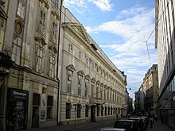
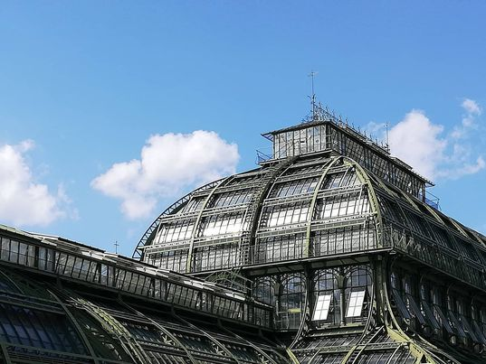
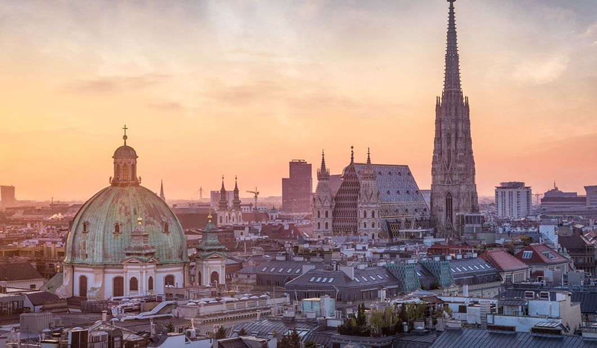

The Rich History of Vienna, Austria
Kings and queens, great empires, world-renowned culture... the history of the vibrant European city of Austria from its beginnings thousands of years ago, to its establishment as the capital of the Republic of Austria is most certainly an adventure.
Now to aid this thirst of new knowledge, here is our little pandora’s box of mysteries regarding our beloved city.
The Ancient city and The Middle Ages:
Vienna grew from the Roman settlement known as
Vindobona.
It was located in the outskirts of the Roman empire
making it easier to fell prey to the chaos of
The Migration Period.
The Romans created a military camp
during the 1st century on the site of the city centre of present-day Vienna.
The streets and houses of early medieval Vienna followed the former Roman walls.
^Panoramic view of Vienna after the city walls were reconstructed in 1548. In the middle is St Stephen's Cathedral,
behind the medieval Hofburg complex.Right next to it the Minoritenkirche and to the far right Schottenstift with the Schottentor gate.
Over the centuries, control of the city changed hands many times as the Roman Empire declined.
The first mention of the town as Wenia was found in 881, and a document from 996 refers to the wider area as Ostarrîchi , the name that eventually became Österreich , or Austria as we know it in English.
The Babenberg Dynasty
The House of Babenberg:
House of Babenberg, Austrian ruling house in the 10th–13th century. Leopold I of Babenberg became margrave of Austria in 976. The Babenbergs’ power was modest, however, until the 12th century, when they came to dominate the Austrian nobility. With the death of Duke Frederick II in 1246, the male line of the Babenbergs ended, and the family’s power declined rapidly.
Under the Babenberg dynasty, the area prospered. It became an important trading centre where Crusaders on their way to the East bought provisions and equipment.Vienna is mentioned as a Civitas for the first time, which indicates the existence of a well-ordered settlement.
In 1155, Margrave Henry II of Austria made Vienna his capital. In 1156, Austria was raised to a duchy in the
Privilegium Minus, with Vienna becoming the seat of all future dukes. During that time, the Schottenstift was founded,the monastery in the heart of Vienna (picture below).
Two days before the Christmas of 1192, King Richard the Lionhearted of England was captured by Duke Leopold V the virtuous of Austria in Erdberg near Vienna resulting in 50,000 Silver marks being given to the Austrians as a ransom. This allowed the creation of a mint (an industrial facility which manufactures coins that can be used as currency) and the construction of city walls around the year 1200.
However Because he had abused a protected crusader (King Richard of England), Leopold V was excommunicated by Pope Celestine III, and died (without having been absolved) after falling from a horse in a tournament.
^Today we can still see part of the wall at the U-Bahn station Stubentor.
The Habsburg Dynasty - Imperial Vienna
The House of Habsburg:
The House of Habsburg is a German dynasty which was once one of the most prominent royal houses of Europe in the 2nd millennium.
The throne of the Holy Roman Empire was continuously occupied by the Habsburgs from 1440 until their extinction in the male line in 1740 and, after the death of Francis I, from 1765 until its dissolution in 1806.The house also produced kings of Bohemia, Hungary, Croatia, Spain, Portugal and
Galicia-Lodomeria, with their respective colonies; rulers of several principalities in the Low Countries and Italy; and in the 19th century, emperors of Austria and of Austria-Hungary as well as one emperor of Mexico.
It was considered embarrassing that Vienna did not have its own bishop. It is known that Duke Frederick II negotiated about the creation of a bishopric in Vienna, and the same is suspected of Ottokar Přemysl.
In 1278, Rudolf I, first king of Germany from the house of Hapsburg,took control over the Austrian lands after his victory over Ottokar II of Bohemia and began to establish Habsburg rule. It took a relatively long time for the Habsburgs to establish their control, because partisans of Ottokar remained strong for a long time.
With the Luxembourg emperors, Prague became the imperial residence and Vienna stood in its shadow. The early Habsburgs attempted to extend it in order to keep up. Duke Albert II, for example, had the gothic choir of the
Stephansdom built.

Rudolf IV “the Founder” of Austria raised the level of prosperity.He founded the University of Vienna in 1365,and began the construction of the gothic nave in the Stephansdom which is connected to the creation of a metropolitan chapter, as a symbolic substitute for a bishop.
However in 1469, Vienna was given its own bishop, and the Stephansdom became a cathedral. Vienna eventually became capital of the Austro-Hungarian Empire in 1556 after the Habsburgs had gained Hungary and Bohemia.
.
^The University of Vienna
A closer look inside the cathedral:
The Sieges of Vienna
The siege of Vienna , in 1529, was the first attempt by the Ottoman Empire to capture the city of Vienna, Austria. Suleiman the Magnificent, sultan of the Ottomans, attacked the city with over 100,000 men, while the defenders, led by Niklas Graf Salm, numbered no more than 21,000. Nevertheless, Vienna was able to survive the siege, which lasted from 27 September to 14 October 1529.
After the victory of this siege (mostly due to the fact that by the time the Ottomans arrived it was late September meaning heavy rains and the start of a humid and cold weather. Most of the sultans army and ammunitions were in a poor state.)
around 1679, the Bubonic Plague struck the city, killing nearly a third of its population.
^People celebrating the end of the plague and below the same column seen above in the centre of Vienna made as a memorial

After the Bubonic Plague,in the summer of 1683, the Ottoman empire decided to attack Vienna for the second time, marking it as The Second Turkish Siege of Vienna or also known as The Battle of Vienna . Army led by Grand Vizier Kara Mustapha attacked Vienna, the Emperor’s official residence and capital city. Up to 200,000 soldiers were encamped before the walls. Along with many of its inhabitants, Emperor Leopold I had already fled. Help came from an imperial army commanded by Duke Charles V of Lorraine, who joined up with units from other parts of the Holy Roman Empire and the troops of Jan III Sobieski, the King of Poland. Together they beat back the Ottoman army and lifted the siege. Over the following decades, as the Turkish forces were pushed back to the Balkans, Vienna could prosper in peace.
Vienna in the 18th Century
The following period was characterised by extensive building activities.
Vienna was largely turned into a baroque city. Most construction happened in the suburbs Vorstädte, as the nobility began to cover the surrounding land with garden palaces, known as Palais. The best known are the Palais Liechtenstein, Palais Modena, Palais Schwarzenberg, Schönbrunn Palace, and the Belvedere.When the Habsburgs died out with Charles V in 1740, his daughter Maria Theresa took over. Under the Empress, and her son and successor Joseph, a huge amount of civil reform was instituted. They reorganised the economy, army and judiciary; granted increased freedom to different religions, improved government and education, and supported the arts, as well as making German the country's official language. Under Emperor Joseph II , the city administration was modernized in 1783: officials in charge of only the city were introduced, and the Magistrate was created.
Palais Liechtenstein:

Palais Modena:

Palais Schwarzenberg:
Emperor Franz Joseph was born in Schönbrunn Palace in 1830. The monarch spent the last years of his life here in their entirety. Schönbrunn Palace has a total of 1,441 rooms. The interiors are in the Rococo style. Mozart made music in the mirrored hall of Schönbrunn Palace as a six year-old prodigy. In the Round Chinese Cabinet, Maria Theresa held her secret conferences with State Chancellor Prince Kaunitz. Napoleon held conferences in the Vieux Lacque Room. And in the Blue Chinese Salon, Emperor Charles I signed his renunciation of government (end of the monarchy). The Millions Room, paneled with rosewood and decorated with valuable miniatures from India and Persia, ranks amongst the most beautiful Rococo rooms in existence.

The Palm House located in the gardens of the Schönbrunn Palace

However, because the palace has too many rooms I suggest you access this Virtual Tour Of Schönbrunn.
The Belvedere Palace:
The Belvedere is not only a magnificent Baroque palace but it is also one of the oldest museums in the world and a venue for contemporary art.
Austrian and Austro-Hungarian Empires
Things went downhill at the beginning of the 19th century, with inflation and state bankruptcy following Napoleon's occupation of Vienna in 1805 and again in 1809. However, it retained a central political position in Europe following the end of the Napoleonic Wars, hosting the Congress of Vienna in 1814–15 to restore the balance of power.
The city was heavily involved in the 1848 Revolution, which resulted in Francis Joseph being named Emperor. Under his rule, Vienna evolved into a modern city, with infrastructure improvements and a rapidly growing economy and population - it became the 4th biggest city worldwide at the time! When the Austro-Hungarian Empire was formed in 1867, Vienna became the imperial capital, and continued its cultural growth, architecture and painting movements amongst other arts.The city's population grew, and it entered a golden age of music thanks to Gluck, Haydn, and Mozart, and later Beethoven and Schubert.
-The young Empress Elisabeth of Austria and Emperor Franz Joseph I of Austria
<>During that period, the population of Vienna increased sharply, mostly because of immigration. Censuses were conducted regularly from 1869 onwards, which showed an all-time high of population in 1910, with 2,031,000 inhabitants. As a result to that the city walls were expanded twice.
World War I and The First Republic
World War I (1914–1918) did not result in an immediate threat to Vienna,it did however leed to a lack of supplies because of the economicrestriction imposed by the Entente powers (informal understanding between the Russian Empire, the French Third Republic and the United Kingdom of Great Britain and Ireland).These food shortages led to the 1918 Austro-Hungarian January Strike which started in Vienna.The end of the war was also the end of Austria-Hungary. On November 12, 1918, the Republic of Deutsch-Österreich, or German-Austria, was proclaimed in front of the parliament. In 1921, Vienna was separated from surrounding Lower Austria and became a state of its own, with the mayor now equivalent in rank to a state governor. (However, it remained the nominal capital of Lower Austria until 1986.)
Civil War
The fire of the Justizpalast (Palace of Justice) in 1927 after violent demonstrations, the collapse of the Creditanstalt, the largest bank of the country, and finally the termination of the parliament in 1933, were how the civil war started.
The fire started with the conflict between supporters of the Republican Schutzbund and the Association of War Veterans. It led to the death of two people and it burned the Supreme Court and the official library, the then third-largest library in Europe with countless historic documents as well as the Land Registry for the district of Vienna. After this incident Engelbert Dollfuß, the Chancellor of Austria during that period, banned the Nazi Party, the Communist Part and the Social Democratic Party leaving only a party made by him called Vaterländische Front, in a bit we will be able to see how this affected the course of the following historic event.
World War II
In March 1938 Nazi Germany occupied and took over Austria in a process known as the Anschluss. Adolf Hitler was received in Vienna by large crowds of admirers and famously gave a speech at Heldenplatz in which he welcomed his homeland into the Reich.
On November 9, 1938, the synagogues, the Jewish centres of not only religious, but also social life, were destroyed.
In August, the KZ Oberlanzendorf Wien (Central Office for Jewish Emigration,designed to expel the jews from the nazi occupied places) was created. Its head was Adolf Eichmann. Adolf Eichmann was the one responsible for organising the Holocaust.
Hitler himself hated Vienna and was determined to build up Linz , his childhood town, in it’s place.
Hitler giving his stupid speech at heldenplatz (he looks like a donkey on drugs)
During the war, the city had 12 sub-camps of the infamous Mauthausen-Gusen concentration camp, located in various parts of the city.
The Mathausen-Gusen Concentration Camp
In the second picture above, we can see the infamous "Stairs of Death” where prisoners were forced to carry a granite block up 186 steps to the top of the quarry
The years of the Allied Forces in Vienna (1945 to 1955) and The end of WWII
Within days of the end of the fighting, i.e. in April 1945 still, the provisional city government was constituted and the political parties re-emerged, and after suffering huge amounts of destruction from heavy bombing by the Allied Forces during World War II, Vienna was liberated by Soviet troops in 1945. It was then divided into occupation zones and controlled by different Allied powers until its independence in 1955 and the democracy was restored.
This was the history behind Vienna, a place where the aristocratic air remains even to this date and to leave without the horrible not of the World Wars here are some pictures of Vienna today :)

here are pictures taken by our personal photographer sir. Aggelos Howlader.